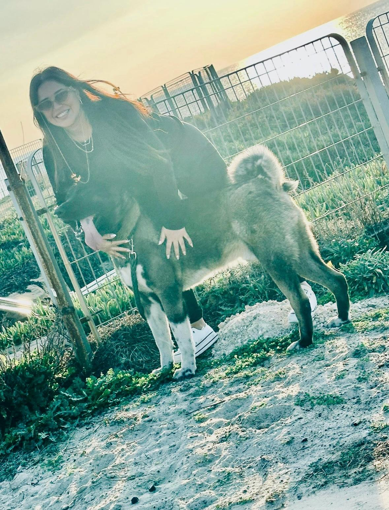

שמי שירלי נחמן
ילידת 1988 מתגוררת בראשון לציון

.אני מאוד אוהבת בעלי חיים באשר הם
..בעיקר כלבים
.וכלב כשמו כן הוא - לב
.כבר מגיל קטן הורי מספרים שעוד לפני שידעתי לדבר וישבתי בעגלה, שהייתי רואה כלב מטייל ליד, הייתי מבקשת לרדת וללטף אותו
.וכן היו מורידים אותי כדי ללטף אותו
.המצחיק הוא שאימי עד עצם היום הזה מפחדת מכלבים. אפילו שלא יריחו אותה מרחוק
.אך אני, כמו אבא שלי איפה שיש בעלי חיים אנחנו שם
.וכך בכל פעם שמכרים נסעו לחופשה והיו צריכים דוגיסיטר, אני הייתי מביאה הביתה כלב
.ועד שהתרגלנו אליו הכלב היה צריך לשוב לביתו ומשפחתו וכולם היו עצובים
.אך מעולם לא הסכימו לי לאמץ כלב באופן קבוע